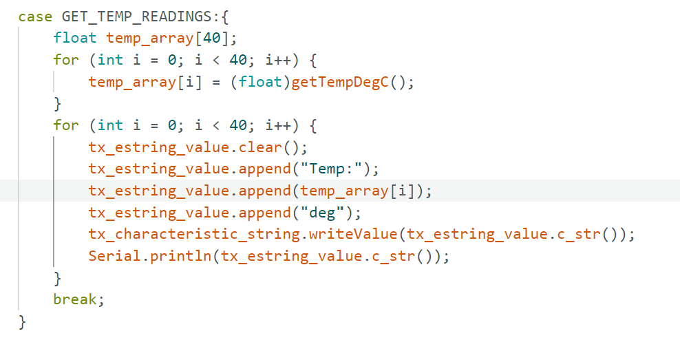
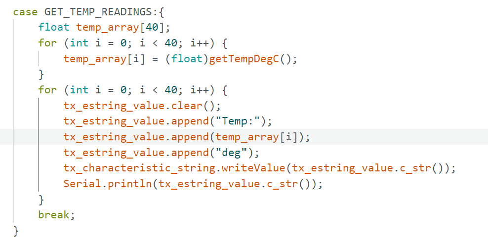
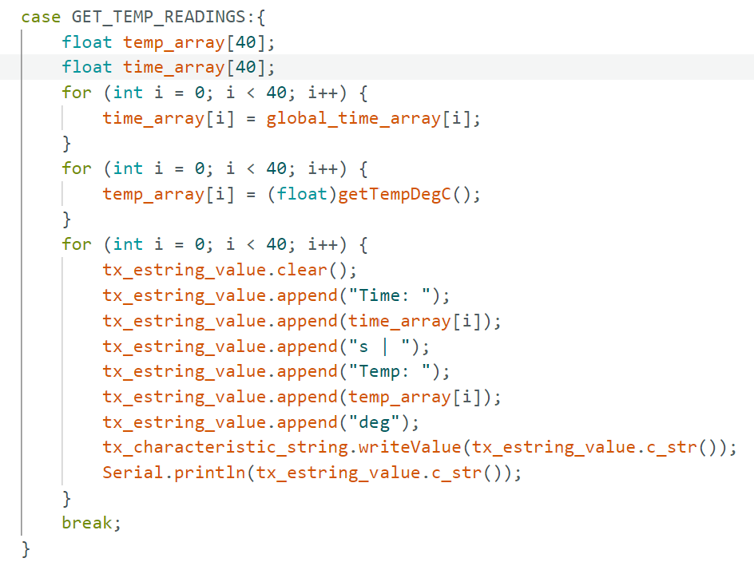
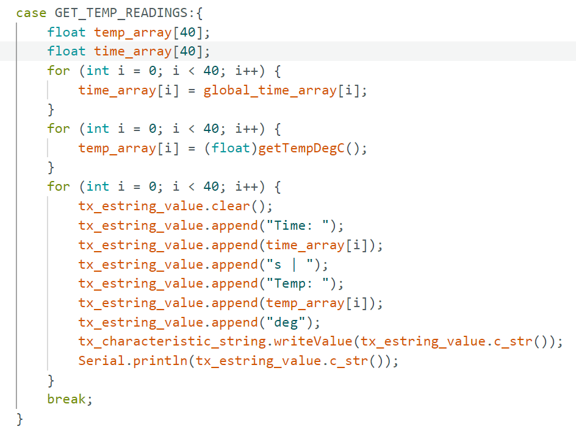

I used USB connection to connect my laptop to the Artemis boad.

In Arduino IDE, the target board is set to be "RedBoardArtemis Nano", and the port is set to "COM3".

A string "ggggg" is sent as input to serial port, the board sent back the same string and print out on the serial monitor.
The board has a built-in sensor as peripheral controlled by the microcontroller. I tried to use hand to head up the board, constantly updated data about temperature is printed out on the serial monitor
The board has a built-in microphone. I spoke to the board changing my voice, the board is printing out data about detected sound constantly on the serial monitor.


 



 

 ⬅ Back to Home
⬅ Back to Home